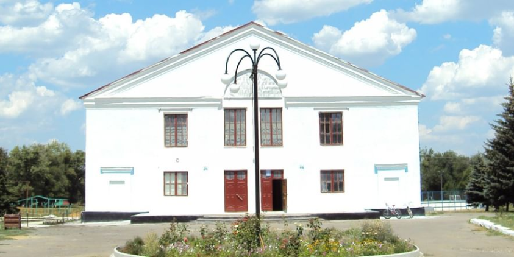

О нас
Муниципальное казенное учреждение “АРГИНСКИЙ КУЛЬТУРНО-ДОСУГОВЫЙ И ИНФОРМАЦИОННЫЙ ЦЕНТР” расположено в самом центе поселения на станции Арга Серешевского района Амурской области.
По удаленности от города Белогорск село находится в 15 км. Добраться можно на автомобиле примерно за 15–20 минут по асфальтированной дороге.
По самому селу также проложен асфальт, что создает беспроблемный проезд к зданию Дома культуры. Рядом находиться здание администрации, школа, амбулатория. Наш Дом культуры был построен в 1967 году, мощность зрительного зала — 160 посадочных мест. В настоящее время МБУК ”АРГИНСКИЙ КДИЦ” имеет развитую систему клубных формирований — 16. Здесь и клубы по интересам, и кружки декоративно-прикладного творчества, вокальные студии, фитнес-студия, кружок сценического мастерства.

Что мы делаем
Специалисты культурно-досугового центра стараются поддерживать основные цели и задачи культурно - досуговой деятельности учреждения, отражающие особенности и запросы времени:
Для улучшения качества работы, специалистами ДК используются различные формы проведения мероприятий: игровые, познавательные, тематические, концертно- развлекательные, театрализованные программы, фестивали, конкурсы, вечера отдыха, массовые гуляния и другие.